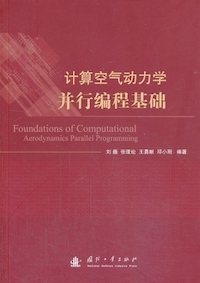

|
Yong-Xian WANG (王勇献)
|
Research Interest
There are some selected research topics below:- High performance computing
- Scientific and engineering computing
- Computational ocean acoustics
- Computational fluid dynamics
- Spectral methods for PDE
- Machine learning-based PDE solvers
Publications
Books
|  | |||
| 2022 | 2019 | 2013 | 2011 |
- 吴新荣, 付红丽, 杨俊钢, 李云,
王勇献 , 李威. 海洋环境再分析技术. 科学出版社，2023
Xinrong Wu, Hongli Fu, Jungang Yang, Yun Li,Yongxian Wang , Wei Li. Reanalysis Techniques for the Ocean Environment. China Science Publishing & Media Ltd, 2023 王勇献 , 肖汶斌, 刘巍, 屠厚旺. 水声学数值计算的谱方法：原理与编程实践. 科学出版社，2022 [Website] [出版社] [京东]
Yongxian Wang , Wenbin Xiao, Wei Liu, Houwang Tu. Spectral Methods in Computational Underwater Acoustics : Principles and Programming Practice. China Science Publishing & Media Ltd, 2022- 刘巍,
王勇献 , 张理论. 数值海洋声学. 科学出版社，2019 [出版社] [京东]
Wei Liu,Yongxian Wang , Lilun Zhang. Numerical Ocean Acoustics. China Science Publishing & Media Ltd, 2019 - 刘巍, 张理论,
王勇献 , 邓小刚. 计算空气动力学并行编程基础. 国防工业出版社，2013 [京东]
Wei Liu, Lilun Zhang,Yongxian Wang , Xiaogang Deng. Foundations of Computational Aerodynamics Parallel Programming. National Defense Industry Press, 2013 王勇献 , 王正华. 生物信息学导论：面向高性能计算的算法与应用. 清华大学出版社，2011 [出版社]
Yongxian Wang , Zhenghua Wang. Introduction to Bioinformatics : Algorithms and Applications for High Performance Computing. Tsinghua University Press, 2011
Journal Papers
-
Xian Ma,
Yongxian Wang , Xiaoqian Zhu, Xiaolan Zhou, Houwang Tu, Guojun Xu, Dongbao Gao, Hefeng Zhou.
A Chebyshev collocation method for directly solving two-dimensional ocean acoustic propagation in linearly varying seabed.
The Journal of the Acoustical Society of America, 2024, 156: 3630--3274. [Link [BibTeX] -
Zhao Sun,
Yongxian Wang .
A Coordination attention Residual U-Net Model for Enhanced Short and Mid-term Sea Surface Temperature Prediction.
Environmental Modelling and Software, 2025, 183: 106251. [Link [BibTeX] -
Siyuan Liao, Wenbin Xiao,
Yongxian Wang .
Dynamic hybrid parallel computing of the Ray Model for solving underwater acoustic fields in vast sea.
Scientific reports, 2024, 14: 25385. [Link] [BibTeX] -
Yinuo Zhang, Houwang Tu,
Yongxian Wang , Guojun Xu, and Dongbao Gao.
A Normal Mode Model Based on the Spectral Element Method for Simulating Horizontally Layered Acoustic Waveguides.
Journal of Marine Science and Engineering, 2024, 12(9): 1499. [Link] [BibTeX] -
Xian Ma,
Yongxian Wang , Xiaolan Zhou, Guojun Xu, and Dongbao Gao
A Chebyshev tau matrix method to directly solve two-dimensional ocean acoustic propagation in undulating seabed environment.
Physics of Fluids, 2024, 36: 096601. [Link] [BibTeX] -
Yongxian Wang , Houwang Tu, Guojun Xu, Dongbao Gao.
A review of the application of spectral methods in computational ocean acoustics.
Physics of Fluids, 2023, 35(12): 121301. [Link] [BibTeX] - Houwang Tu,
Yongxian Wang , Yinuo Zhang, Xiaodong Wang, Wei Liu.
A spectrally discretized wide-angle parabolic equation model for simulating acoustic propagation in laterally inhomogeneous oceans.
The Journal of the Acoustical Society of America, 2023, 153: 3334-3349. [Link] [BibTeX] - Houwang Tu,
Yongxian Wang , Wei Liu, Shuqing Ma, Xiaodong Wang.
A spectral method for the depth-separated solution of a wavenumber integration model for horizontally stratified fluid acoustic waveguides.
Physics of Fluids, 2023, 35(5): 057127. [Link] [arXiv ] [BibTeX] - Houwang Tu,
Yongxian Wang , Chunmei Yang, Wei Liu, Xiaodong Wang.
A Chebyshev-Tau spectral method for coupled modes of underwater sound propagation in range-dependent ocean environments.
Physics of Fluids, 2023, 35(3): 037113. [Link] [arXiv ] [BibTeX] - Houwang Tu,
Yongxian Wang , Yinuo Zhang, Haolin Liao, Wei Liu.
Parallel numerical simulation of weakly range-dependent ocean acoustic waveguides by adiabatic modes based on a spectral method.
Physics of Fluids, 2023, 35(1): 017119. [Link] [BibTeX] - Ji Wu, Peng Li,
Yongxian Wang , Qiang Lan, Wenbin Xiao, Zhenghua Wang.
VFR: the underwater acoustic target recognition using cross-domain pre-training with FBank fusion features.
Journal of Marine Science and Engineering, 2023, 11(2): 263. [OA Link ] [BibTeX] - Wei Liu, Guojun Xu, Xinghua Cheng,
Yongxian Wang .
A novel finite difference scheme for normal mode models in underwater acoustics.
Journal of Marine Science and Engineering, 2023, 11(3): 553. [OA Link ] [BibTeX] - Houwang Tu,
Yongxian WANG , Wei Liu, Chunmei Yang, Jixing Qin, Shuqing Ma, Xiaodong Wang.
Application of a spectral method to simulate quasi-three-dimensional underwater acoustic fields.
Journal of Sound and Vibration, 2023, 545: 117421. [Link] [arXiv ] [BibTeX] - Peng Li, Ji Wu,
Yongxian Wang , Qiang Lan, Wenbin Xiao.
STM: spectrogram transformer model for underwater acoustic target recognition.
Journal of Marine Science and Engineering, 2022, 10(10): 1428. [OA Link ] [BibTeX] - Kaizhuang Yan,
Yongxian Wang , Wenbin Xiao.
A new compression and storage method for high-resolution SSP data based-on dictionary learning.
Journal of Marine Science and Engineering, 2022, 10(8): 1095. [OA Link ] [BibTeX] - Houwang Tu,
Yongxian Wang , Chunmei Yang, Xiaodong Wang, Shuqing Ma, Wenbin Xiao, Wei Liu.
A novel algorithm to solve for an underwater line source sound field based on coupled modes and a spectral method.
Journal of Computational Physics, 2022, 468: 111478. [Link] [arXiv ] [BibTeX] - Houwang Tu,
Yongxian Wang , Xian Ma, Xunjiang Zhu.
Applying the Chebyshev-Tau spectral method to solve the parabolic equation model of wide-angle rational approximation in ocean acoustics.
Journal of Theoretical and Computational Acoustics, 2022, 30(2): 2150013. [OA Link ] [arXiv ] [BibTeX] - 华小强, 程永强, 王宏强,
王勇献 , 张理论.
结合流形滤波的矩阵信息几何检测器 | Matrix information geometric detectors with manifold filter.
国防科技大学学报 | Journal of National University of Defense Technology, 2022, 44(6): 51-60. [OA Link ] [BibTeX] - 华小强, 程永强, 王宏强,
王勇献 , 张理论.
矩阵信息几何中值检测器 | Matrix Information Geometric Median Detectors.
电子学报 | Acta Electronica Sinica, 2022, 50(2): 284-294. [OA Link ] [BibTeX] - Wei Liu, Lilun Zhang,
Yongxian Wang , Xinghua Cheng, Wenbin Xiao.
A Vector Wavenumber Integration Model of Underwater Acoustic Propagation Based on the Matched Interface and Boundary Method.
Journal of Marine Science and Engineering, 2021, 9(10): 1134. [OA Link ] [BibTeX] - Xian Ma,
Yongxian Wang , Xiaoqian Zhu, Wei Liu, Wenbin Xiao, Qiang Lan.
A high-efficiency spectral method for two-dimensional ocean acoustic propagation calculations.
Entropy, 2021, 23(9): 1227. [OA Link ] [BibTeX] - Xian Ma,
Yongxian Wang , Xiaoqian Zhu, Wei Liu, Qiang Lan, Wenbin Xiao.
A spectral method for two-dimensional ocean acoustic propagation.
Journal of Marine Science and Engineering, 2021, 9(8): 892. [OA Link ] [BibTeX] - 马现,
王勇献 , 朱小谦, 屠厚旺, 李朋, 颜恺壮.
谱方法求解水声传播问题的优化与并行 | Optimization and parallelization of spectral method for solving underwater acoustic propagation.
计算机工程与科学 | Computer Engineering & Science, 2021, 44(3): 381-389. [Link] [BibTeX] - Houwang Tu,
Yongxian Wang , Qiang Lan, Wei Liu, Wenbin Xiao, Shuqing Ma.
Applying a Legendre collocation method based on domain decomposition to calculate underwater sound propagation in a horizontally stratified environment.
Journal of Sound and Vibration, 2021, 511: 116364 [Link] [arXiv ] [BibTeX] Wang Yongxian , Tu Houwang, Liu Wei, Xiao Wenbin, Lan Qiang.
Two Chebyshev spectral methods for solving normal modes in atmospheric acoustics.
Entropy, 2021, 23(6): 705. [OA Link ] [arXiv ] [BibTeX]Yongxian Wang , Houwang Tu, Wei Liu, Wenbin Xiao, Qiang Lan.
Application of a Chebyshev collocation method to solve a parabolic equation model of underwater acoustic propagation.
Acoustics Australia, 2021, 49: 281-291. [Link] [BibTeX]- Houwang Tu,
Yongxian Wang , Qiang Lan, Wei Liu, Wenbin Xiao, Shuqing Ma.
A Chebyshev-Tau spectral method for normal modes of underwater sound propagation with a layered marine environment.
Journal of Sound and Vibration, 2021, 492: 115784. [Link] [arXiv ] [BibTeX]
Corrigendum to 'A Chebyshev-Tau spectral method for normal modes of underwater sound propagation with a layered marine environment'. Journal of Sound and Vibration, 2021, 495: 115924. [Link] - Zijie Zhu,
Yongxian Wang , Xiaoqian Zhu, Wei Liu, Qiang Lan, Wenbin Xiao, Xinghua Cheng.
Parallel optimization of three-dimensional wedge-shaped underwater acoustic propagation based on MPI+OpenMP hybrid programming model.
The Journal of Supercomputing, 2021, 77: 4988-5018. [Link] [BibTeX] - Wei Liu, Lilun Zhang, Wenke Wang, Yongxian Wang, Shuqing Ma, Xinghua Cheng, Wenbin Xiao.
A three-dimensional finite difference model for ocean acoustic propagation and benchmarking for topographic effects.
The Journal of the Acoustical Society of America, 2021, 150(2): 1140-1156. [OA Link ] [BibTeX] - Houwang Tu,
Yongxian Wang , Wei Liu, Xian Ma, Wenbin Xiao, Qiang Lan.
A Chebyshev spectral method for normal mode and parabolic equation models in underwater acoustics.
Mathematical Problems in Engineering, 2020, 2020(1): 1-12. [OA Link ] [BibTeX] - 徐传福, 车永刚, 李大力,
王勇献 , 王正华.
天河超级计算机上超大规模高精度计算流体力学并行计算研究进展 | Research progresses of large-scale parallel computing for high-order CFD on the Tianhe supercomputer.
计算机工程与科学 | Computer Engineering & Science, 2020, 42(10): 1815--1826. [OA Link ] [BibTeX] - 刘巍, 肖汶斌, 程兴华,
王勇献 , 张理论.
提高近场精度的海洋声学快速场改进模型 | Improving near-source region accuracy algorithms of fast field program of ocean acoustics.
国防科技大学学报 | Journal of National University of Defense Technology, 2019, 41(6): 168-174. [OA Link ] [BibTeX] - 刘巍, 肖汶斌, 程兴华，
王勇献 , 张理论.
声场波数积分最大截止波数自动选取算法 | Automatic selection algorithm for maximum truncate wavenumber of acoustic wavenumber integration method
国防科技大学学报 | Journal of National University of Defense Technology, 2019, 41(4): 177-181. [OA Link ] [BibTeX] - Lilun Zhang, Dezhi Wang, Changchun Bao,
Yongxian Wang , Kele Xu.
Large-scale whale-call classification by transfer learning on multi-scale waveforms and time-frequency features.
Applied Sciences, 2019, 9(5): 1020. [OA Link ] [BibTeX] - 张理论, 郭贤鹏, 王得志,
王勇献 , 吴艳群.
基于 Kriging 替代模型的水声传播损失不确定性量化研究 | Uncertainty quantification analysis of underwater acoustic transmission loss based on the Kriging surrogate model.
哈尔滨工程大学学报 | Journal of Harbin Engineering University, 2019, 40(1): 88-93. [OA Link ] [BibTeX] WANG Yong-Xian , ZHANG Li-Lun, LIU Wei, CHENG Xing-hua, ZHUANG Yu, Anthony T Chronopoulos.
Performance optimizations for scalable CFD applications on hybrid CPU+MIC heterogeneous computing system with millions of cores.
Computers & Fluids, 2018, 173: 226-236. [Link] [arXiv ] [BibTeX]- 肖汶斌, 刘巍, 程兴华,
王勇献 .
三维移动脉动源非定常波系演变与试验验证 | Unsteady wave evolution and test verification for three-dimensional translating-pulsating source Green function.
流体动力学 | International Journal of Fluid Dynamics, 2018, 6(4): 114-123. [OA Link ] [BibTeX] - 肖汶斌, 刘巍, 程兴华,
王勇献 .
有限水深 Kelvin 源格林函数的传播特性及其应用 | Propagation characteristics of Kelvin source Green function in finite depth water and its application.
国防科技大学学报 | Journal of National University of Defense Technology, 2017, 39(4): 185-191. [OA Link ] [BibTeX] - LI Dali, XU Chuanfu,
WANG Yongxian , SONG Zhifang, XIONG Min, GAO Xiang, DENG Xiaogang.
Parallelizing and optimizing large-scale 3D multi-phase flow simulations on the Tianhe-2 supercomputer.
Concurrency and Computation: Practice and Experience, 2016, 28(5): 1678-1692. [Link] [BibTeX] - 车永刚, 张理论,
王勇献 , 徐传福, 程兴华.
Intel 多核与集成众核上 CFD 程序的 OpenMP 性能分析 | OpenMP Performance Analysis of CFD Application on Intel Multicore and Manycore Architectures.
计算机科学与探索 | Journal of Frontiers of Computer Science and Technology, 2015, 9(10): 1153-1162. [Link] [BibTeX] - LIU Wei, ZHANG Lilun, ZHONG Ying,
WANG Yongxian , CHE Yonggang, XU Chuanfu, CHENG Xinghua.
CFD high-order accurate scheme Jacobian-Free Newton Krylov method.
Computers & Fluids, 2015, 110: 43-47. [Link] [BibTeX] - Yonggang Che, Chuanfu Xu, Jianbin Fang,
Yongxian Wang , Zhenghua Wang.
Realistic performance characterization of CFD applications on Intel many integrated core architecture.
The Computer Journal, 2015, 58(12): 3279-3294. [Link] [BibTeX] 王勇献 , 张理论, 车永刚, 徐传福, 刘巍, 程兴华.
高阶精度 CFD 应用在天河2系统上的异构并行模拟与性能优化 | Heterogeneous computing and optimization on Tianhe-2 supercomputer system for high-order accurate CFD applications.
计算机研究与发展 | Journal of Computer Research and Development, 2015, 52(4): 833-842. [OA Link ] [BibTeX]- 熊敏,
王勇献 .
面向 CPU+MIC 混合异构平台的地震波叠前时间偏移算法并行与优化策略 | Parallel optimization of the seismic wave PKTM algorithm on CPU+MIC heterogeneous platform.
计算机工程与科学 | Computer Engineering & Science, 2015, 37 (1): 14-22. [OA Link ] [BibTeX] 王勇献 , 张理论, 车永刚, 徐传福, 刘巍, 程兴华.
结构网格 CFD 应用程序在天河超级计算机上的高效并行与优化 | Efficient parallel computing and performance tuning for multi-block structured grid CFD applications on Tianhe supercomputer.
电子学报 | Acta Electronica Sinica, 2015, 43(1): 36-44. [OA Link ] [BibTeX]- CHE Yonggang, ZHANG Lilun, XU Chuanfu,
WANG Yongxian , LIU Wei, WANG Zhenghua.
Optimization of a parallel CFD code and its performance evaluation on Tianhe-1A.
Computing and Informatics, 2014, 33(6): 1377-1399. [OA Link ] [BibTeX] - CHE Yonggang, ZHANG Lilun,
WANG Yongxian , XU Chuanfu, LIU Wei, WANG Zhenghua.
Microarchitectural performance comparison of Intel Knights Corner and Intel Sandy Bridge with CFD applications.
The Journal of Supercomputing, 2014, 70(1): 321-348. [Link] [BibTeX] - 唐波,
王勇献 .
大规模 CFD 多区结构网格任务负载平衡算法 | A novel task load balancing algorithm in the large-scale CFD with multi-zone structured grids.
计算机工程与科学 | Computer Engineering & Science, 2014, 36(7): 1213-1220. [OA Link ] [BibTeX] - XU Chuanfu, DENG Xiaogang, ZHANG Lilun, FANG Jianbin, WANG Guangxue, JIANG Yi, CAO Wei, CHE Yonggang,
WANG Yongxian , WANG Zhenghua, LIU Wei, CHENG Xinghua.
Collaborating CPU and GPU for large-scale high-order CFD simulations with complex grids on the TianHe-1A supercomputer.
Journal of Computational Physics, 2014, 278: 275-297. [Link] [BibTeX] WANG Yong-Xian , ZHANG Li-Lun, LIU Wei, CHE Yong-Gang, XU Chuan-Fu, WANG Zheng-Hua.
Efficient parallel implementation of large scale 3D structured grid CFD applications on the Tianhe-1A supercomputer.
Computers & Fluids, 2013, 80: 244-250. [Link] [BibTeX]Wang Yong-Xian , Zhang Li-Lun, Che Yong-Gang, Xu Chuan-Fu, Liu Wei, Liu Hua-Yong, Wang Zheng-Hua.
Improved algorithm for reconstructing singular connection in multi-block CFD applications.
Transaction of Nanjing University of Aeronautics & Astronautics, 2013, 30(S): 51-57. [arXiv ] [BibTeX]王勇献 , 张理论, 刘巍, 车永刚, 徐传福, 王正华.
CFD 并行计算中的多区结构网格二次剖分方法与实现 | Grid repartitioning method of multi-block structured grid for parallel CFD simulation.
计算机研究与发展 | Journal of Computer Research and Development, 2013, 50(8): 1762-1768. [OA Link ] [BibTeX]- 车永刚, 张理论,
王勇献 , 徐传福, 刘巍, 王正华, 刘化勇.
一个结构网格并行 CFD 程序的单机性能优化 | Uniprocessor performance tuning of a structured grid based parallel CFD application.
计算机科学 | Computer Science, 2013, 40(3): 116-120. [OA Link ] [BibTeX] 王勇献 , 王正华.
网络图自动绘制的超松弛加速算法.
中国科学(信息科学), 2011, 41(3): 269-282. [OA Link ]
YongXian WANG , ZhengHua WANG.
A fast successive over-relaxation algorithm for force-directed network graph drawing.
Science China Information Sciences, 2012, 55(3): 677-688. [Link] [arXiv ] [BibTeX]
Conference Papers
- Xiaoqiang Hua, Qiang Lan,
Yongxian Wang , Shuqing Ma, Jun Tian.
An improved matrix information geometric detector with parameter selection.
2020 IEEE 6th International Conference on Computer and Communications (ICCC), Chengdu, China, 2020, pp. 2313-2317. [Link] [BibTeX] - Xiaoqiang Hua, Zhikun Liao,
Yongxian Wang , Jiangyi Wang, Sheng Feng, Jun Tian.
Log-Euclidean metric-based signal detector with manifold filter and matrix information geometry.
2020 IEEE 20th International Conference on Communication Technology (ICCT), Nanning, China, 2020, pp. 1208-1212. [Link] [BibTeX] - Xian Ma, Houwang Tu,
Yongxian Wang .
Lidar observations of aerosol enhancement in the upper troposphere and lower stratosphere.
2020 IOP Conference Series: Earth and Environmental Science, Volume 513, 2020 International Conference on Petrochemical Engineering and Green Development. Shanghai, China, 2020.4.17-19 [OA Link ] [BibTeX] - Houwang Tu,
Yongxian Wang , Xiongxin Dong.
Influence of the south-north bias of the South Asia High on the water vapor distribution in the upper troposphere-lower stratosphere of the Asian monsoon region.
2020 IOP Conference Series: Earth and Environmental Science, Volume 474, Environmental Prevention and Pollution Control Technologies. Shanghai, China, 2020.4.17-19 [OA Link ] [BibTeX] - Xiaoqiang Hua, Zemin Zhou, Yang Zeng, Qiang Lan,
Yongxian Wang , Lilun Zhang, Wenke Wang.
Matrix information geometry for passive sonar signal detection in a non-stationary environment.
2019 IEEE 4th International Conference on Signal and Image Processing (ICSIP) [Link] [BibTeX] - Xiao Wenbin,
Wang Yongxian, Liu Wei, Lan Qiang, Cheng Xinghua, Zhu Zijie, Wang Xin, Luo Ben, Wang Dezhi, Wu Jiani, Zhang Lilun.
Parallel implementation for three-dimensional acoustic field computation in a penetrable wedge by image source method.
23rd International Congress on Acoustics (ICA 2019), Aachen, Germany, 2019.09.09-13 [OA Link ] [BibTeX] - Dezhi Wang, Lilun Zhang, Changchun Bao, Shuqing Ma,
Yongxian Wang .
A comparative study for shallow water match-field inversion using surrogate models.
OCEANS 2019, Marseille, Marseille, France, 2019, pp. 1-6 [Link] [BibTeX] - Dezhi Wang, Lilun Zhang, Kele Xu,
Yongxian Wang .
Acoustic scene classification based on dense convolutional networks incorporating multi-channel features.
2018 3rd International Conference on Communication, Image and Signal Processing, Journal of Physics: Conference Series, Volume 1169, Sanya, China. 2018.11.16-18 [OA Link ] [BibTeX] - Wenbin Xiao, Le Li, Xinghua Cheng, Wei Liu,
Yongxian Wang .
Validation of the longitudinal motion amplitude and phase for two ships with forward speed at close proximity in waves.
2018 3rd International Conference on Communication, Image and Signal Processing, Journal of Physics: Conference Series, Volume 1169, Sanya, China, 2018.11.16-18 [OA Link ] [BibTeX] - Xiao Wenbin,
Wang Yongxian , Liu Wei, Cheng Xinghua, Wang Dezhi, Zhang Lilun.
Numerical investigation of the frequency-domain coupled hydrodynamics for two ships advancing at close proximity in waves.
Oceans 2018, Charleston, SC, USA, 2018.10.22-25 [Link] [BibTeX] - Liu Wei, Cheng Xinghua, Xiao Wenbin,
Wang Yongxian , Zhang Lilun.
A direct high-order finite difference solution to the Helmholtz equation in ocean acoustics.
Oceans 2018, Charleston, SC, USA, 2018.10.22-25 [Link] [BibTeX] - Wen Zhang, Yanqun Wu, Dezhi Wang,
Yongxian Wang , Yibo Wang, Lilun Zhang.
Underwater target feature extraction and classification based on Gammatone filter and machine learning.
2018 International Conference on Wavelet Analysis and Pattern Recognition (ICWAPR), Chengdu, China, 2018, pp. 42-47 [Link] [BibTeX] - Xianpeng Guo, Lilun Zhang, Dezhi Wang, Zengquan Lu,
Yongxian Wang , Jun Zhang.
Efficient computation and uncertainty analysis of underwater acoustic propagation based on Kriging surrogate model.
The International Conference on Computer Science and Application Engineering (CSAE2017), Shanghai, China, 2017.10.21-23 [Link] [BibTeX] - Min Xu,
Yongxian Wang , A T Chronopoulos, Hao Yue.
Performance optimization and parallelization of a parabolic equation solver in computational ocean acoustics on modern many-core computer.
The International Conference on Computer Science and Application Engineering (CSAE2017), Shanghai, China, 2017.10.21-23 [Link] [arXiv ] [BibTeX] - Zengquan Lu, Lilun Zhang, Dezhi Wang,
Yongxian Wang , Min Xu.
Research on multi-beam scanning and optimization technology for time modulated array.
The International Conference on Computer Science and Application Engineering (CSAE2017), Shanghai, China, 2017.10.21-23 [Link] [BibTeX] - Lilun Zhang, Xianpeng Guo, Zengquan Lu, Dezhi Wang,
Yongxian Wang .
Research on geoacoustic inversion based on Kriging surrogate model.
2017 IEEE International Conference on Signal Processing, Communications and Computing (ICSPCC2017), Xiamen, China, 2017.10.22-25 [Link] [BibTeX] - Min Xu,
Yongxian Wang .
Parallelization and performance optimization of calculation in three-dimensional underwater acoustic propagation on modern many-core processor.
2017 IEEE International Conference on Signal Processing, Communications and Computing (ICSPCC2017), Xiamen, China, 2017.10.22-25 [Link] [BibTeX] - Hao Yue, Lilun Zhang, Dezhi Wang,
Yongxian Wang , Zengquan Lu.
The classification of underwater acoustic targets based on deep learning methods.
2nd International Conference on Control, Automation and Artificial Intelligence (CAAI 2017), Advance in Intelligent System Research, volume 134, pp. 526-529 [OA Link ] [BibTeX] - 金远洋,
王勇献 .
格子玻尔兹曼方法的并行优化与分析.
2016中国高性能计算学术年会, 陕西西安, 2016.10.27-30 [BibTeX] - 张镇正,
王勇献 .
三维欧拉方程面向异构并行平台的移植与优化.
第十届中国系统建模与仿真技术高层论坛, 北京, 2015.10.24-26 [BibTeX] - CHE Yonggang, ZHANG Lilun,
WANG Yongxian , XU Chuanfu, LIU Wei, CHENG Xinghua.
Performance optimization of a CFD application on Intel multicore and manycore architectures.
Advanced Computer Architecture: 10th Annual Conference (ACA 2014), Shenyang, China, August 23-24, 2014.8.23-24 [Link] [BibTeX] - 宋志方,
王勇献 .
格子玻尔兹曼方法在天河系统上的优化与可扩展性分析.
2014中国高性能计算学术年会, 广东广州, 2014.11.4-8 [BibTeX] - Xu Chuanfu, Zhang Lilun, Deng Xiaogang, Fang Jianbin, Wang Guangxue, Cao Wei, Che Yonggang,
Wang Yongxian , Liu Wei.
Balancing CPU-GPU collaborative high-order cfd simulations on the Tianhe-1A supercomputer.
IEEE 28th International Parallel & Distributed Processing Symposium (IPDPS 2014), Phoenix, AZ, USA, 2014.5.19-23 [Link] [BibTeX] - Xu Chuanfu, Cao Wei, Zhang Lilun, Wang Guangxue, Che Yonggang,
Wang Yongxian , Liu Wei.
Accelerating high-order CFD simulations for multi-block structured grids on the TianHe-1A supercomputer.
26th International Conference on Parallel Computational Fluid Dynamics (ParCFD 2013), Changsha, China, 2013.5.20-24 [Link] [BibTeX] - Xu Chuanfu, Deng Xiaogang, Zhang Lilun, Jiang Yi, Cao Wei, Fang Jianbin, Che Yonggang,
Wang Yongxian , Liu Wei.
Parallelizing a high-order CFD software for 3D, multi-block, structural grids on the TianHe-1A supercomputer.
28th International Supercomputing Conference on Supercomputing (ISC 2013), Leipzig, Germany, 2013.6.16-20 [Link] [BibTeX] - 宋志方,
王勇献 .
力导引算法的加速与优化研究.
2013全国高性能计算学术年会, 广西桂林, 2013.10.29-31 王勇献 , 张理论, 刘巍, 车永刚, 徐传福, 王正华.
大规模多区结构网格 CFD 应用的高效并行模拟技术.
全国高性能计算学术年会(HPC China 2012), 湖南张家界, 2012.10.27-31- 曹维, 徐传福, 张理论, 车永刚,
王勇献 , 刘巍, 刘化勇, 王正华.
高精度气动模拟在天河1A-HN超级计算机系统上的CPU/GPU异构并行实现.
全国高性能计算学术年会(HPC China 2012), 湖南张家界, 2012.10.27-31 WANG Yong-Xian , ZHANG Li-Lun, CHE Yong-Gang, XU Chuan-Fu, LIU Wei, LIU Hua-Yong, WANG Zheng-Hua.
An improved algorithm for reconstructing singular connection in the multi-block CFD applications,
9th Asian Computational Fluid Dynamics Conference (ACFD9), Nanjing, China, 2012.10.10-14 [arXiv ]王勇献 , 张理论, 刘巍, 车永刚, 徐传福, 王正华, 刘化勇.
结点型多区结构网格的奇点重构算法.
第十五届全国计算流体力学会议, 山东烟台, 2012.8.4-7WANG Yong-Xian , ZHANG Li-Lun, CHE Yong-Gang, LIU Wei, XU Chuan-Fu, LIU Hua-Yong.
TH-MeshSplit: a multiblock grid repartitioning tool for parallel CFD applications on heterogeneous CPU/GPU supercomputer.
25th International Conference on Parallel Computational Fluid Dynamics (ParCFD 2012), Atlanta, Georgia, USA, 2012.5- Wei Cao, Zhenghua Wang, Zongzhe Li, Lu Yao,
Yongxian Wang .
An improved LBM approach for heterogeneous GPU-CPU clusters.
4th International Conference on Biomedical Engineering and Informatics (BMEI 2011), Shanghai, China, 2011, pp. 2095-2098 [Link] [BibTeX] Yong-Xian Wang , Zong-Zhe Li, Lu Yao, Wei Cao, Zheng-Hua Wang.
Two improved GPU acceleration strategies for force-directed graph layout.
2010 International Conference on Computer Application and System Modeling (ICCASM 2010), Taiyuan, China, 2010, pp. V13-132-V13-136 [Link] [BibTeX]
Last Update: 2024.11.18